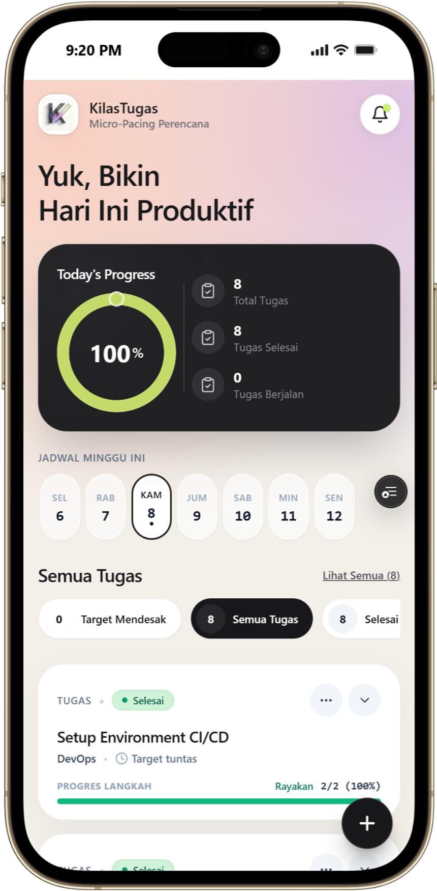

Problem Statement
Task Paralysis pada Penugasan Mahasiswa.
Beban Multi-Matkul
Mahasiswa hadapi 4–7 modul tugas serentak dengan instruksi abstrak dan tebal (10–20 halaman).
Cognitive Overload
Bukan malas, tapi otak mengalami freeze: buntu menentukan aksi pertama (where to start).
Sistem Kebut Semalam
Berujung panik massal di malam H-1/H-0, mutu tugas akademik anjlok, dan memicu burnout.
Mengapa Ini Penting? Bukti Nyata Lapangan.
Literatur Akademis & Kajian Ilmiah
Meta-analisis bukti 80%–95% mahasiswa menunda tugas akibat aversivitas tugas & impulsivitas.
Studi 342 mahasiswa: prokrastinasi melibatkan beban kognitif & afektif, bukan sekadar manajemen waktu.
Rencana aksi terarah berpeluang tinggi (d = .65) menggerakkan eksekusi tindakan nyata.
Survei Tim Jadi H-1 (28 Mahasiswa)
Sering/selalu selesaikan tugas di malam H-1 / H-0 deadline.
Menunda karena bingung cara memulai & modul terlalu panjang.
Pernah gagal kumpul tepat waktu hingga kena penalti nilai.
Lanskap Solusi yang Ada Saat Ini.
To-Do List Standar
Todoist, Google Tasks, Apple Reminders.
Hanya mencatat judul tugas & tanggal deadline.
Project Management
Notion, Trello, Asana, Jira.
Ditujukan untuk tim enterprise bisnis, bukan individu mahasiswa.
Kalender Pasif
Google Calendar, Apple iCal.
Blok waktu statis tanpa arahan aksi mikro bertahap.
Catatan Manual
Notes HP, WhatsApp Grup Kelas.
Terkubur pesan lain dan rentan terlupa.
Kesenjangan Kritis Alat Produktivitas Populer.
Deadline-Centric
Mencatat tanggal akhir pengumpulan tanpa memecah langkah kerja nyata. Beban dekomposisi diserahkan 100% ke mahasiswa yang sedang kewalahan.
Nir Micro-Pacing
Tidak ada bimbingan porsi cicilan harian yang aman. Menimbulkan ilusi waktu luang semu yang memicu penundaan hingga H-1.
Setup Friction Tinggi
Notion & PM tools butuh setup database, board, dan tags manual. Energi kognitif habis sebelum eksekusi dimulai.
KilasTugas: 4 Pilar Solusi Aksi Nyata.
"Jangan tanya kapan selesai, tanyakan apa yang dikerjakan hari ini."
Actionable AI Chunking
Pecah silabus panjang jadi 3–8 sub-tugas konkret (<60 huruf) dengan estimasi menit realistis (25–90 mnt).
Visual Micro-Pacing Ring
Progress gauge harian otomatis: On Track, Behind Schedule, atau Overdue Alert tanpa hitung manual.
Persistent Pomodoro Engine
Floating timer 25/5 persisten di tab browser dengan audio chime synthesizer saat sesi selesai.
Blueprint Sharing (/p/:id)
1 orang dekomposisi tugas kelas, seluruh teman seangkatan bisa impor rencana aksi dalam 1 detik.
Alur Pengalaman Pengguna
Quick Input
Paste modul tugas kuliah dan pilih target 3-8 langkah.
AI Decomposition
AI susun urutan aksi konkret dengan estimasi waktu terukur.
Today Focus & Micro-Pacing
Pantau status On Track/Behind dan fokus kuota hari ini.
Persistent Pomodoro
Fokus 25/5 lewat floating timer dan lonceng audio.
Sync & Peer Sharing
Ekspor kalender .ics/GCal dan bagikan blueprint sekelas.

Teknologi: Bukan Sekadar AI Chatbot / Wrapper.
9Router & Gemini
Model ag/gemini-3.7-flash-medium dengan output JSON Schema murni (aksi singkat, durasi terukur, day offset), bukan sekadar teks percakapan bebas.
Pacing & Timer Nyata
Tiap langkah terhubung langsung ke Visual Progress Gauge harian (On Track / Behind) dan Persistent Pomodoro Timer dengan audio chime bawaan peramban.
Smart Cache & Fallback
Cache MariaDB sajikan tugas sekelas <20ms (hemat 70% token AI). Jika AI timeout, Deterministic Fallback template kurikulum aktif otomatis.
Model Keberlanjutan: Social Open-Access.
Zero-Barrier Adoption
- • Mode Guest tanpa form registrasi akun
- • Penetrasi pengguna masif di lingkungan kampus
- • Pertumbuhan organik via link Blueprint Sharing
Ultra-Low Operating Cost
- • Smart Caching pangkas 70% konsumsi token AI
- • Hosting SPA statis gratis di Vercel Global Edge
- • Single low-cost VPS untuk backend FastAPI async
Campus & Faculty Support
- • Integrasi pemantauan tenggat tugas prodi/fakultas
- • Pendanaan operasional via hibah inovasi/PKM
- • Kemitraan penyediaan komputasi server universitas
Dampak Nyata & Metrik Keberhasilan.
Inisiasi Tugas
Memangkas waktu mulai dari hitungan hari menjadi hitungan menit.
Completion Rate
Target kenaikan ketepatan waktu pengumpulan tugas kuliah.
Eliminasi H-1
Mengganti panik begadang semalam suntuk dengan kebiasaan mikro harian.
Viral Peer Sharing
Satu rencana tugas dapat membantu puluhan mahasiswa seangkatan sekaligus.
Peta Jalan Pengembangan Produk.
Online Round (~50% Selesai)
- ✓ AI Task Breakdown terarah (3-8 langkah kustom)
- ✓ Visual Micro-Pacing ring & circular gauge status
- ✓ Persistent Pomodoro Timer di background tab
- ✓ Blueprint URL sharing (/p/:id) & ekspor iCal/GCal
Product Sprint & Defense
- • AI Syllabus & PDF Reader: Ekstraksi modul tugas tebal via drag-and-drop
- • Web Push Notification: Alarm Service Worker saat peramban ditutup
- • PWA Offline-First: Dukungan IndexedDB untuk akses nir-kuota